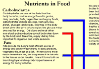
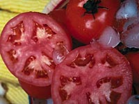
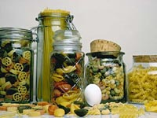
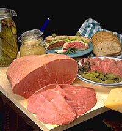

Water
Carbohydrates
Proteins
Fats
Minerals
Vitamins
Additives
|
Food can be considered as a source of edible chemicals which are necessary for the body's growth and maintenance. As well, energy for the body's activities must also come from food. The nutrient content of food can be classified into six main constituents: 
Foods vary in both the quantity and quality of food constituents. For example: plant proteins, with the exception of soya, are generally inferior to animal sources. Some complex carbohydrates from plants are indigestable but add fibre to our diet.
 Water All foods contain water, even those we call "dry" foods. In fresh vegetables water content can be as much as 98 percent of the fresh weight of the product, whereas cookies contain only 4 percent water. Water in food is usually stored inside cells but some water is tightly bound to chemicals such as carbohydrates. Water is used by cells in the body to break down food (hydrolysis) and to rid the body of excess or toxic products.
 Carbohydrates Carbohydrates are an important energy source, fueling the central nervous system and muscles during physical activity. Complex carbohydrates, found in grain foods, fruits and vegetables, get their name from their complex chain-like structure of many sugar units. These substances have a "protein sparing effect" since the body uses carbohydrates for energy in preference to proteins saving the latter substances for muscle building etc. Some carbohydrates such as cellulose and hemicellulose are not digested by the human gastrointestinal system but add fibre and bulk to the diet. Current dietary guidelines recommend obtaining 55 to 60 percent of energy from carbohydrates, especially complex carbohydrates.
 Proteins Proteins supply the body with chemical building blocks for the synthesis of body tissues. Essential amino acids, which can not be synthesized by the body have to be ingested as proteins. The nutritional value of proteins relates to their amino acid composition. A complete protein has all the essential amino acids in the correct proportions to support life and growth. Many animal proteins such as those in meat, poultry, fish and eggs have high biological values. Many plant proteins, however, lack certain amino acids. For example, cereals lack the essential amino acid lack lysine. Corn lacks tryptophane. Legumes have proteins with higher biological values but are deficient in methionine. A true vegetarian (a person who does not consume meat and dairy products), has to balance carefully the cereal and legume intake to make sure all the essential amino acids are ingested. The body has limited capacity to store protein and if no carbohydrates are present, the body converts protein into energy. Proteins are extremely important for infants after weaning and in growing adolescents. An average daily intake of 40 to 60 g is required.
Fats Fats supply the body with calories for energy and like carbohydrates are "protein savers". Fats also transport some of the fat soluble vitamins around the body. Fatty acids may be thought of as the "building blocks" of fats. All fats are a mixture of saturated, monounsaturated and polyunsaturated fatty acids. They differ in the amount of hydrogen they contain. Saturated fatty acids contain the most hydrogen (they are "saturated" with hydrogen). Polyunsaturated fatty acids contain the least amount of hydrogen. One polyunsaturated fatty acid, linoleic acid is essential and can not be synthesized by the body. Absence of linoleic acid interferes with growth and produces skin disorders. Good sources of linoleic acid are grain, seed and nut oils as well as poultry fats. Unfortunately many people eat too much fat. Fat makes food taste good. It affects flavour and "mouth feel". Where do you think that creamy taste in chocolate comes from? Fats are a risk factor in heart diseases. Studies show some saturated fats raise blood cholesterol levels and unsaturated fats lower levels. Saturated fats are typically found in higher amounts in meats, egg yolks, whole milk and milk products. Unsaturated fats are found in higher amounts in nuts and liquid vegetable oils.
Minerals The two minerals most needed by the body are calcium and phosphorus, elements need to make our bony skeleton of calcium phosphate. Other minerals that we need include, magnesium, iron and copper, cobalt, zinc sodium and chloride, potassium, iodine, fluorine and several trace metals such as manganese chromium, molybdenum and nickel. Research continues on the role of many other metals in the bodies metabolism. The North American diet has been found deficient in many essential minerals, mainly because we eat too much refined food.
Vitamins Vitamins are organic chemicals, other than essential amino acids and fatty acids that must be supplied to the body to maintain health. An exception is vitamin D which the body can synthesize in the presence of sunlight. Vitamins help other chemical reactions to occur in the body. A process called catalysis. They also help in the construction of cell membranes. Vitamins have no energy value. There are two main groups of vitamins:
Food Additives Compounds have been intentionally added to natural food since the first man added salt to his food for taste and preservation. Nowadays it is almost impossible to find prepared food with herbs and spices. However, there are a number of chemicals added to food that simply preserve shelf life, add colour or give a better texture. It seems to be these additives that give the most concern to the general public.
|